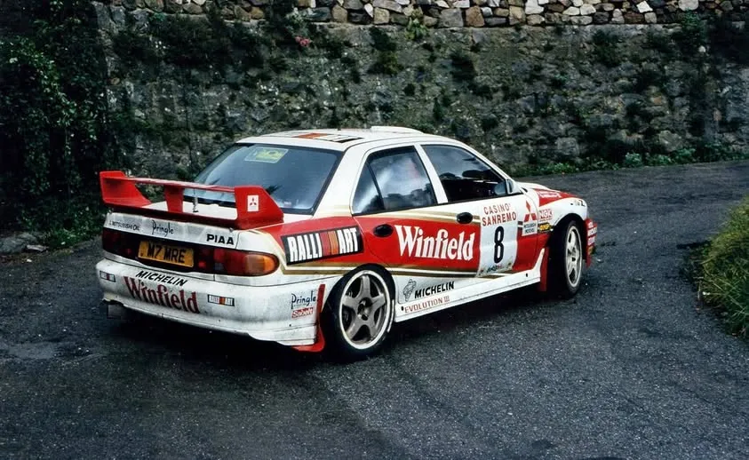
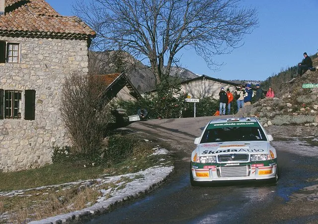
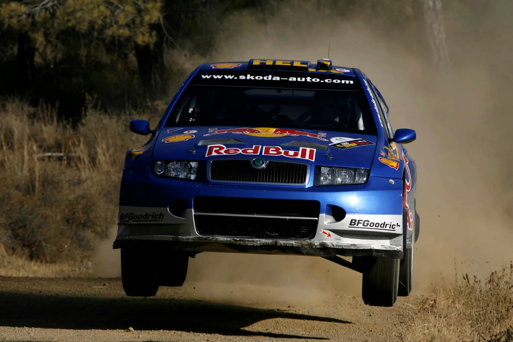
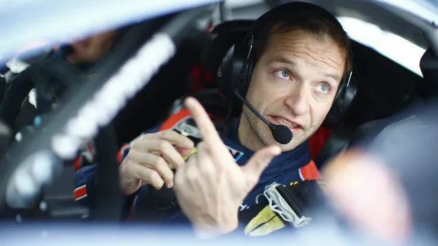
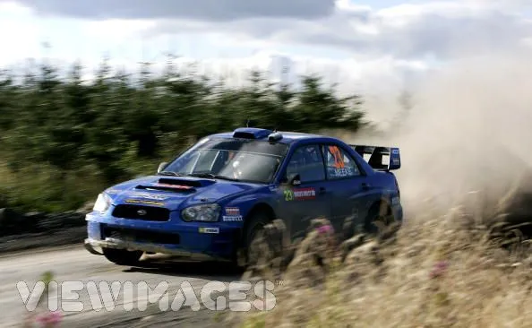
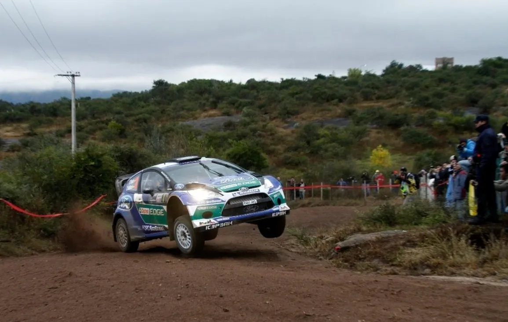
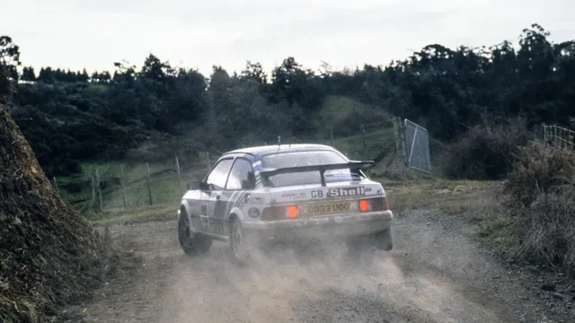

7 Driver-Team Combos You Might Have Forgotten
In the World Rally Championship's 54 seasons, there have been countless driver and team combos, some successful, others were surprisingly bizarre one-offs or short-lived partnerships that history almost forgot. So let's have a look at seven instances of driver/team combos that you may have forgotten!
We will only be focusing on factory, or at least semi-factory efforts, so no Sebastien Loeb in a Corolla, or Timo Salonen in a 206 WRC on this one.
7 - Didier Auriol - Škoda Motorsport - 2003
By 2003, Didier Auriol was at the twilight of his WRC career, with the 1994 champion looking for a factory seat following a rather subpar stint with Seat in 2000 and Peugeot in 2001. The Frenchman only entered Rally Monte-Carlo in a privateer Toyota Corolla WRC in the 2002 season.
In October 2002, Auriol signed with Škoda for all 14 rounds of the season. The goal was for the experienced Auriol to help the Czech outfit with the development of their new car that was set to debut in 2003, the Fabia WRC.

CarEnthusiast.com
Both he and teammate Toni Gardemeister would start the season in the Škoda Octavia WRC, with the Finn out-scoring the Frenchman by 9 points to his 4 by the time the new Fabia WRC was introduced in Germany. Unfortunately for everyone, the new car would not be an upgrade over the Octavia, especially on gravel, with both Auriol and Gardemeister failing to score in all rounds. Auriol was on average the 12th fastest car that season, and only beat Gardemeister on one occasion in rallies they both finished.
6 - Harri Rovanperä - Red Bull Škoda - 2006

From one Škoda team to another, Harri Rovanperä found himself driving for the semi-factory Red Bull Škoda team in 2006. The Finn was left without a drive following Mitsubishi's sudden withdrawal from the sport at the end of the 2005 season, and found an unexpected home mid-way through 2006. Former Peugeot teammate Gilles Panizzi's departure from the team following Rally Catalunya, saw Rovanpera get the call-up for the rest of the 2006 season. Unfortunately, Rovanperä would fail to score any points in 2006, often being outpaced by his less experienced teammate - Andreas Aigner, who would score the team's only points finish in Germany.
5 - Juho Hänninen - Hyundai - 2014

2010 Intercontinental Rally Challenge Champion Juho Hänninen was signed by Hyundai in 2013 to spearhead the team's development of the i20 WRC for their upcoming return to the WRC the following year. Hänninen accumulated about 3.500 km of testing in the car, and was signed by the team for a partial campaign for the 2014 season, with Team Principal Michel Nandan specifically praising his speed, technical ability and feedback.
Hänninen, who had also competed in the WRC's top class with Mitsubishi in 2006 and 2007, as well as M-Sport for two rounds in 2013, did six events in 2014, with a highest finish of 6th. The highlight of his season was in Sardegna, where the Finn led the rally briefly following a stage win on SS3, before rolling out of the event two stages later.
Hänninen exited the team after 2014, becoming Toyota's development driver mid-way through 2015.
4 - Kris Meeke - Subaru - 2005

https://rallyazores.blogspot.com
Many forget that long before his Citroen days, Kris Meeke made his WRC top class debut in Wales Rally GB back in 2005. Meeke, who was in Subaru's radar for a full-time seat earlier, got to drive a Subaru Impreza WRC from 2004 in his home rally alongside his mentor - the 1995 WRC champion Colin McRae. Meeke, who finished 3rd in the Junior WRC that year, got the opportunity to drive a Prodrive backed Impreza partially thanks to McRae, who helped arrange the deal. The pair would actually battle it out on the stages, trading places on Friday, with McRae finishing in 7th, and Meeke in 9th, just twelve seconds behind. Meeke would have to wait until 2011 before another proper shot in the WRC's top-class, being signed by Prodrive for the team's Mini effort.
3 - Dani Sordo - Ford - 2012

A broken left collarbone for Jari-Matti Latvala meant that Ford were looking for someone to sub in for the Finn for Rally Argentina. Enter Dani Sordo. What was supposed to be a full season for the Spaniard had been reduced to a part-time campaign following Prodrive's Mini deal collapsing. Sordo was not originally on the entry list for Argentina, and Prodrive was happy to help Ford, effectively loaning them Sordo for this one rally. The 2005 JWRC champion was on the pace straight away, and was running in a podium position, before an alternator failure robbed him of what would have been a great finish in this one-off event.
Sordo would finish the season with Mini, and then return to Citroen for the 2013 season, where he would achieve his maiden career win in Germany.
2 - Didier Auriol - Mitsubishi - 1996

Archive / Mitsubishi Ralliart Media
Toyota's ban from competition for 1996 left their roster of drivers without a seat for that season. While teammate Juha Kankkunen competed in rallies in the WRC, ERC and the 2-L Cup in a Toyota Celica GT-Four, and Armin Schwarz won the European Rally Championship with Toyota, Auriol chose to have a bit of a gap year, only competing in three rallies that year. Auriol was given a chance by Subaru to compete in Sweden - an entry that could have easily made this list - but the 1994 championship finished a lowly 10th. Auriol would then be called up by Mitsubishi to replace Richard Burns for the 1996 Sanremo Rally due to a clash with the Asian Pacific Rally Championship.
Auriol would finish in 8th place, following some trouble on day 2, earning three points.
1 - Colin McRae - Ford - 1989

LAT Images
Before his stint with Ford in the early 2000s, Colin McRae competed with a Ford Sierra in three rounds of the 1989 season. The Scot drove Sweden in a car Stig Blomqvist had finished 2nd in Sweden the previous year, running as high as 10th, before gearbox problems forced him down to 15th. In New Zealand, McRae would score his first championship points, finishing 5th in a Sierra Cosworth entered by Gary Smith Motorsport, also earning his first career stage win by winning SS32. The future 1995 World Champion would also enter his home rally - the Lombard RAC Rally in a Sierra Cosworth, this time entered by the factory R.E.D. team, crashing out from 15th on day 3.
The Scot would also drive the 1990 RAC rally with a factory Sierra, winning the British Rally Championship in that car, before changing to Subaru for 1991.


Comments